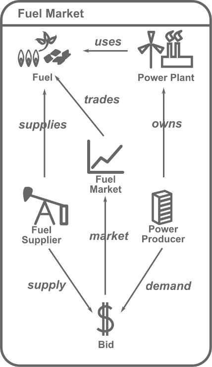
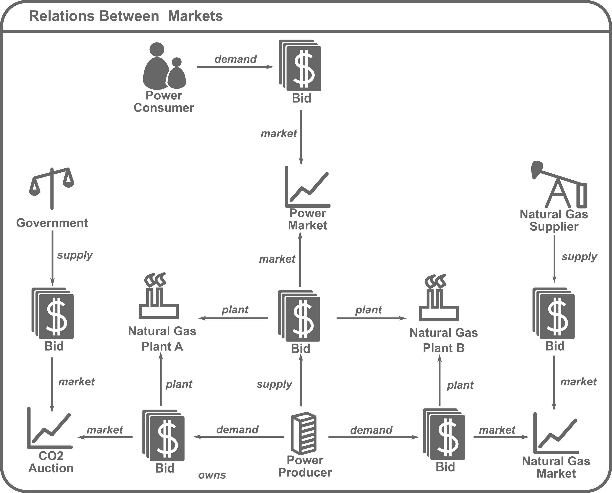
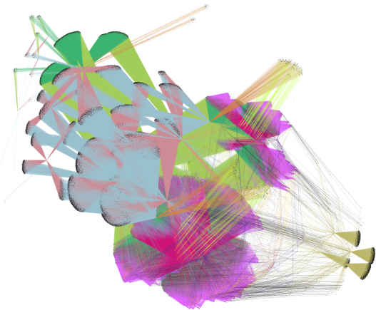
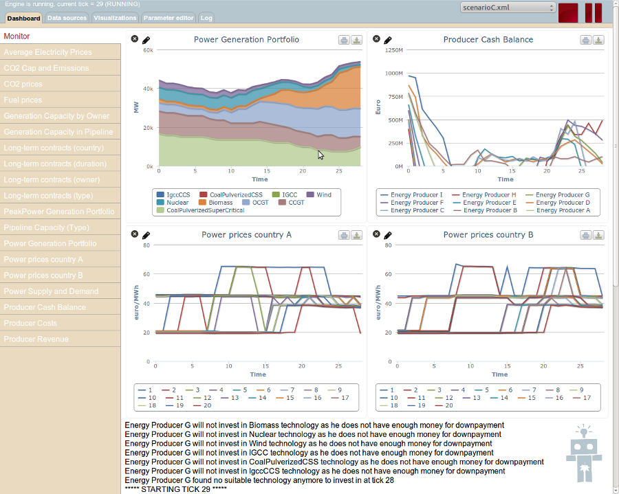

AgentSpring:
Using Graphs to Build Simulations
Alfredas Chmieliauskas
March 2, 2013
What is AgentSpring?
AgentSpring is an Agent Based Modeling and simulation framework based on Spring and Neo4j - a powerful graph database.
There are around 60 ABM frameworks/libraries/packages available already. Why another ABM framework?
Inspiration
AgentSpring is inspired and based on the AI (NLP) classic Scripts, Plans, Goals, and Understanding: An Inquiry Into Human Knowledge Structures by Roger C. Schank and Robert P. Abelson (1977).
"For both people and machines, each in their own way, there is a serious problem in common of making sense out of what they hear, see, or are told about the world. The conceptual apparatus necessary to perform even a partial feat of understanding is formidable and fascinating. Our analysis of this apparatus is what this book is about."
-- Roger C. Schank and Robert P. Abelson
Scripts -> Plans -> Goals
To achieve our goals we create plans, that are composed of scripts.
Scripts are:
- modular,
- reusable,
- rather simple
... set of actions that allow us to "get things done".
For example, a plan to have a fancy dinner with your spouse would be composed out myriad of scipts, such as: "book a restaurant", "dress up", "get a cab", etc.
Composition of behavior
Models are made by composing scripts enabling the modeler to define complex agent behavior. This makes AgentSpring particularly suited to modeling social systems.
On the shoulders of giants
AgentSpring puts software first. It is as much about the ideology of ABM as it is about using great open-source libraries and development frameworks.
- Spring framework provides a consistent way to build modular, configurable and scalable enterprise applications.
- Neo4j provides the persistence layer needed to store the complex object graph that is the simulated world.
We have found that a native graph DB is particularly well suited for ABM development, compared to any other persistence method.
Modular and reusable
AgentSpring, with the help of Spring Framework, decouples agents, their behaviors and their environments making the pieces reusable and easy to manage. Experience has shown that modular models are the only kind of models that can accommodate changing scope and new research questions.
Patterns and architectures
Many of the popular ABM libraries and packages mold data, model logic and user interface together, which is a known ...sin. AgentSpring builds on well known software architecture patterns to make models more understandable and reusable.
Graphs

Graphs for domain modeling

Code: POJO + annotations
@NodeEntity
public class PowerPlant {
@RelatedTo(type = "uses", direction = Direction.OUTGOING)
private PowerGeneratingTechnology technology;
@RelatedTo(type = "owns", direction = Direction.INCOMING)
private EnergyProducer owner;
@RelatedTo(type = "located", direction = Direction.OUTGOING)
private PowerGridNode location;
...
}
Finding things in a graph
@Query("start owner=node({owner})
match (owner)-[:owns]->(plant)
return plant")
public Iterable findPowerPlantsByOwner(
@Param("owner") EnergyProducer owner);
@Query("start tech=node({tech})
match (plant)-[:uses]->(tech)
return sum(plant.capacity)")
public double sumCapacityOfPowerPlantsByTechnology(
@Param("tech") PowerGeneratingTechnology technology);
@Query("start owner=node({owner})
match (owner)-[:owns]->(plant)-[:uses]->(tech)
return plant")
public Iterable findPowerPlantsByOwnerAndTechnology(
@Param("owner") EnergyProducer owner,
@Param("tech") PowerGeneratingTechnology technology);
More complicated example

Even more complicated example

User interface
AgentSpring provides a feature rich web-based user interface.

Machine interfaces
REST, Java RMI
make it easy to integrate with other tools and packages (R, web, visualisation, custom GUIs)
Being social
AgentSpring is committed to open-source. Using open-source libraries also allows to participate in active developer communities and do more together. This has been proven by a successful collaboration with Neo4j developers.
Anyone is welcome to use, learn and contribute: https://github.com/alfredas/AgentSpring